자산을 사고, 나눠 주고, 상각하고, 정리하는 일까지 아홉 가지 기능이 서로 이어져 있습니다.
자산번호를 분류별로 자동으로 매기고, 지급 · 반납 · 이동 · 폐기 · 매각 이력이 자산마다 남습니다.
구매 요청을 승인하면 발주로, 입고 검수를 마치면 자산이 자동 등록됩니다.
정액법 · 정률법으로 달마다 나눠 상각하고, 달을 마감하면 계정 · 부서별 금액이 확정됩니다.
부서별 예산에 구매 · 유지보수 기록이 집행액으로 모이고, 자산마다 총소유비용(TCO)을 봅니다.
소프트웨어 좌석을 임직원에게 할당하고, 보유 수량을 넘겨 쓰거나 만료가 다가오면 알려 줍니다.
수리 · 점검 이력과 다음 점검 일정, 유지보수 · 임대 · 구독 계약과 만료일을 함께 관리합니다.
복사용지 · 토너 같은 소모품의 입고 · 출고와 안전 재고를 관리합니다.
자산번호와 QR이 든 라벨을 인쇄해 붙이고, 실사 때 리더기로 읽어 그 자리에서 확인합니다.
자산 종합 현황, 부서별, 노후 · 교체 대상, 연도별 추이를 보고 엑셀로 내려받습니다.
대장은 엑셀로, 구매는 메일로, 감가상각은 결산 때 따로 — 흩어진 장부를 하나로 잇습니다.
아래 화면은 모두 서비트를 그대로 찍은 것입니다. 이름 · 거래처 · 금액은 설명을 위한 가상 회사 자료입니다.
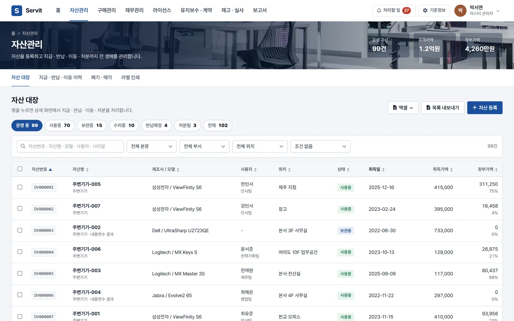
회사의 모든 자산을 상태별로 걸러 보고, 지금의 장부가까지 한 줄에 봅니다.
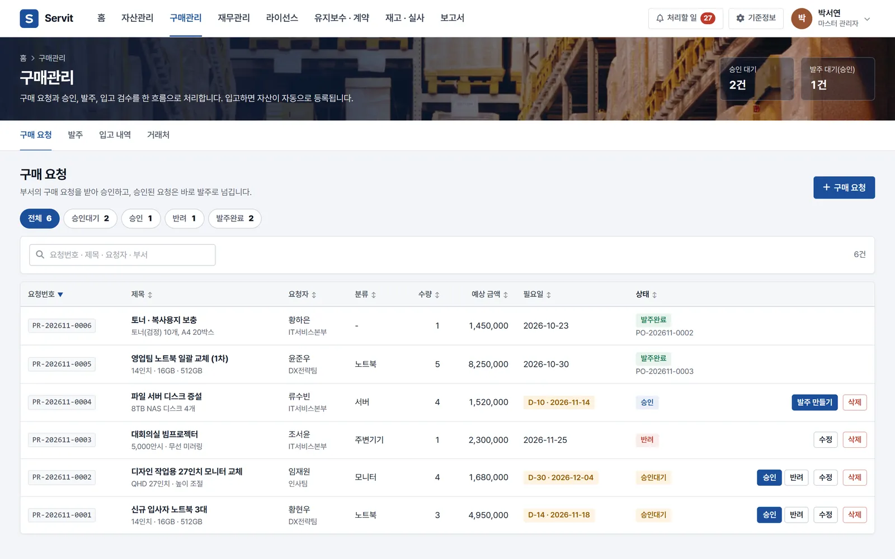
부서의 구매 요청을 받아 승인하고, 승인된 요청은 발주로 이어집니다.
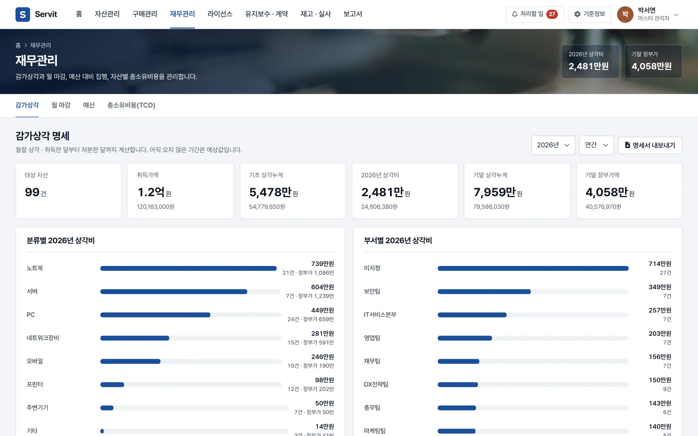
자산마다 달마다 상각비가 계산되고, 분류별 · 부서별로 모아 봅니다.
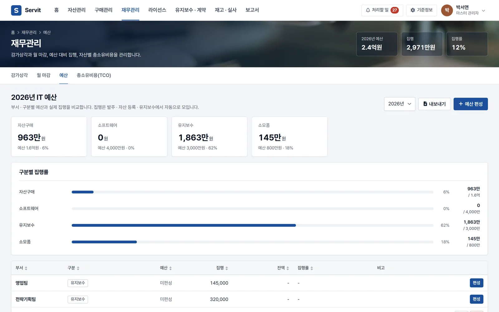
세워 둔 예산에 실제 구매 · 유지보수가 집행액으로 저절로 모입니다.
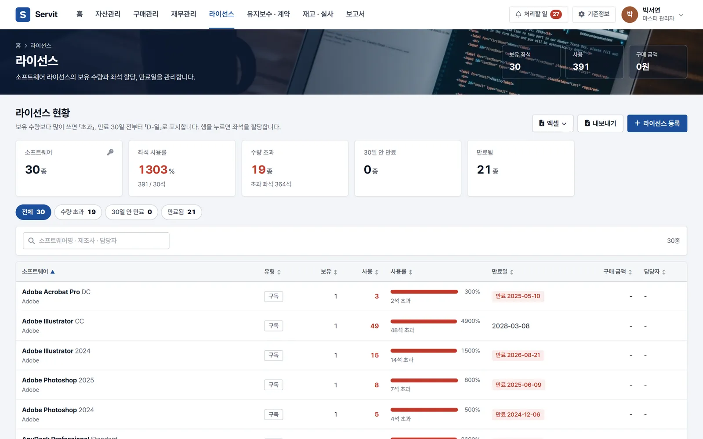
소프트웨어마다 몇 석을 사서 몇 석을 쓰는지 막대로 봅니다.
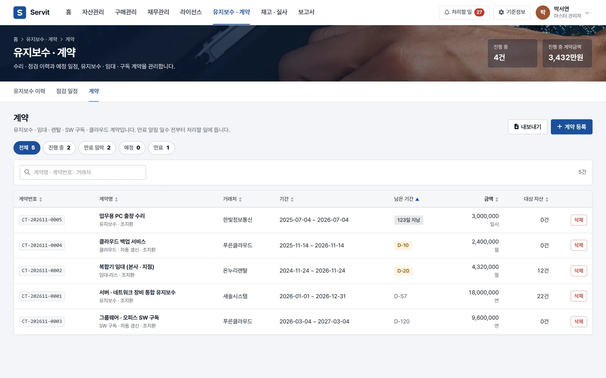
유지보수 · 임대 · 구독 계약을 거래처와 기간, 금액으로 정리합니다.
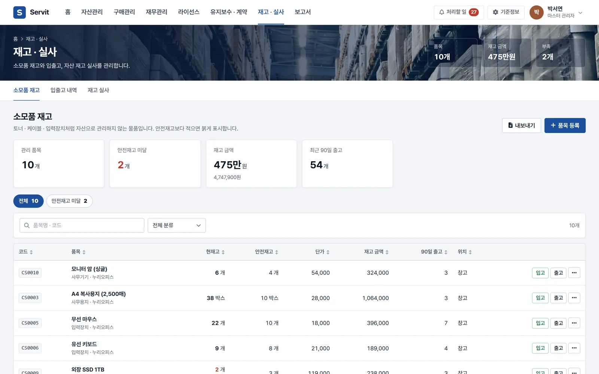
복사용지 · 토너처럼 쓰고 사라지는 물품도 재고로 관리합니다.
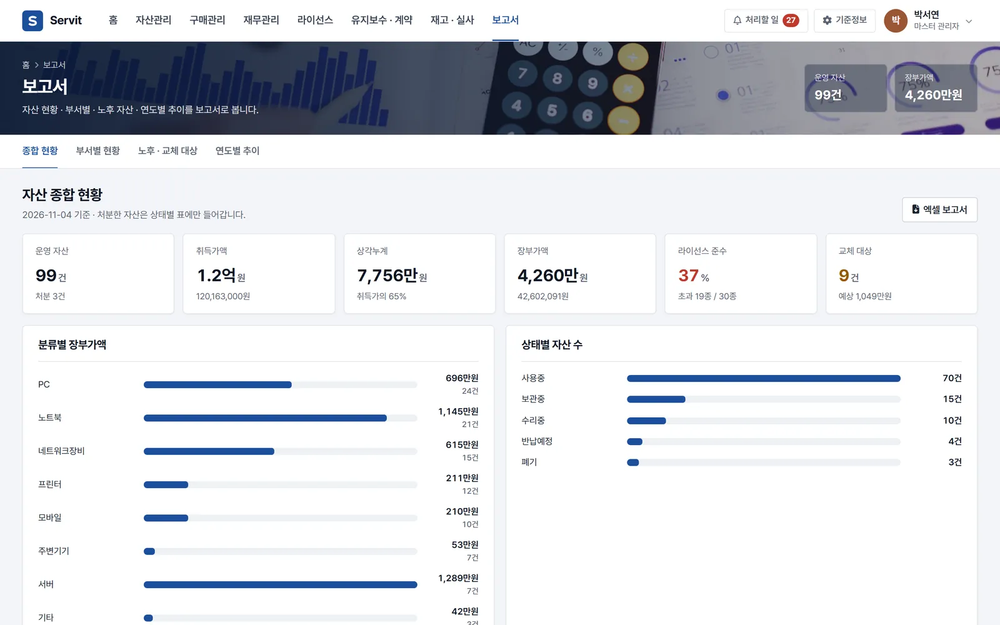
보고용 숫자를 따로 만들지 않아도 됩니다.
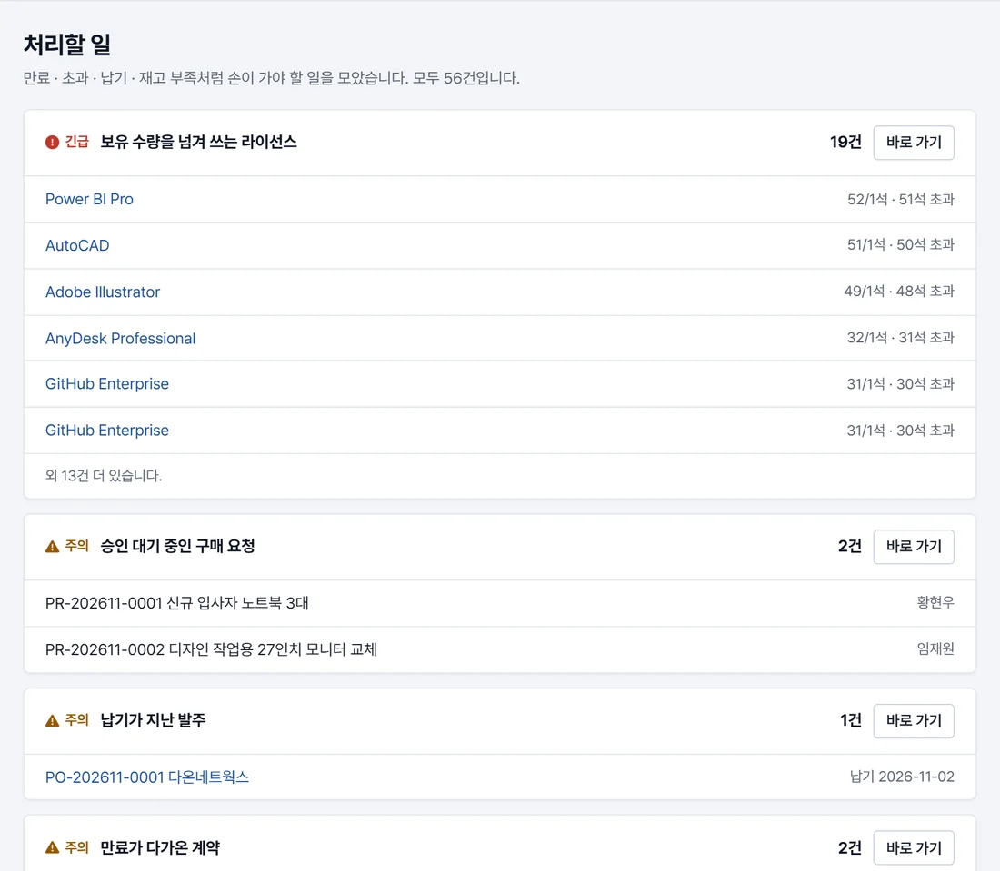
승인을 기다리는 구매 요청, 보유 수량을 넘겨 쓰는 라이선스, 만료가 다가온 계약, 안전 재고 밑으로 내려간 소모품이 「처리할 일」 한곳에 모입니다.
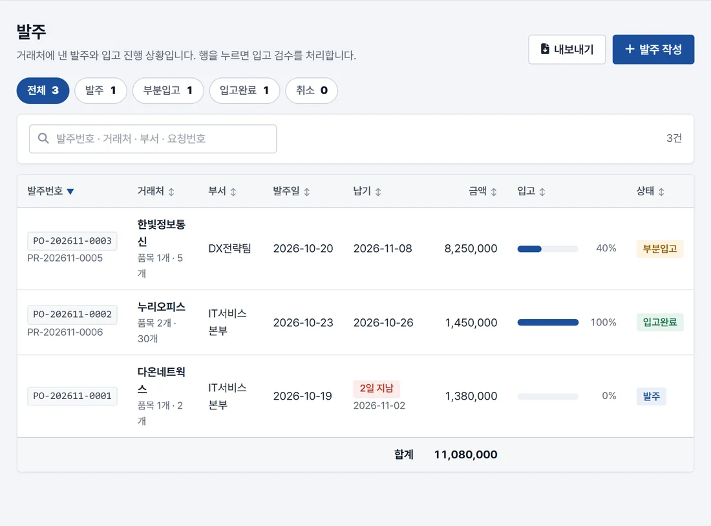
승인된 구매 요청을 발주로 넘기고, 물건이 들어오면 입고 검수를 합니다. 검수를 마치면 자산은 대장에, 소모품은 재고에, 소프트웨어는 라이선스 수량에 더해집니다.
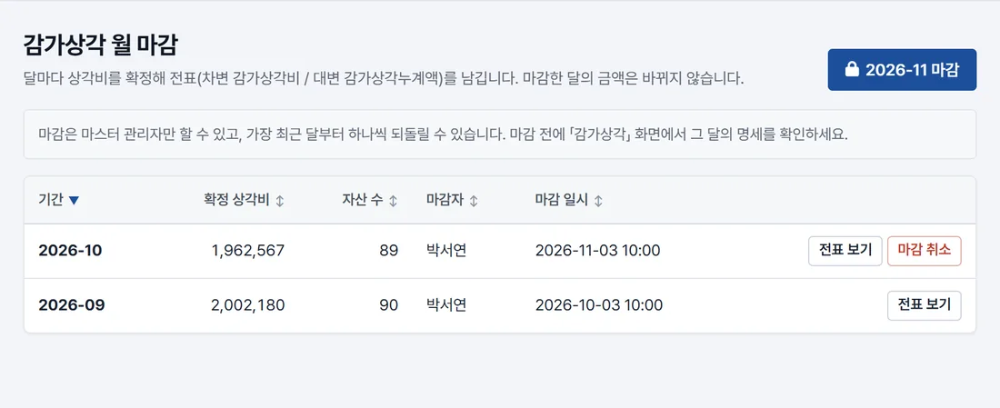
달마다 상각비를 확정해 전표(차변 감가상각비 / 대변 감가상각누계액)를 남깁니다. 마감한 달의 금액은 바뀌지 않고, 마감은 마스터 관리자만 합니다.
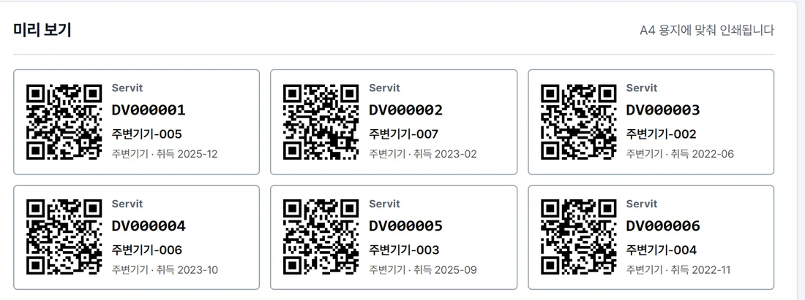
자산을 골라 자산번호와 QR 코드가 든 라벨을 A4 용지에 맞춰 인쇄합니다. 실사 때는 리더기로 라벨을 읽어 바로 확인하고, 휴대폰으로 QR을 찍으면 그 자산 화면이 열립니다.
휴대폰 브라우저로 로그인하면 화면이 휴대폰 폭에 맞춰집니다. 자산 앞에서 QR을 찍어 정보를 열고, 처리할 일을 확인합니다.
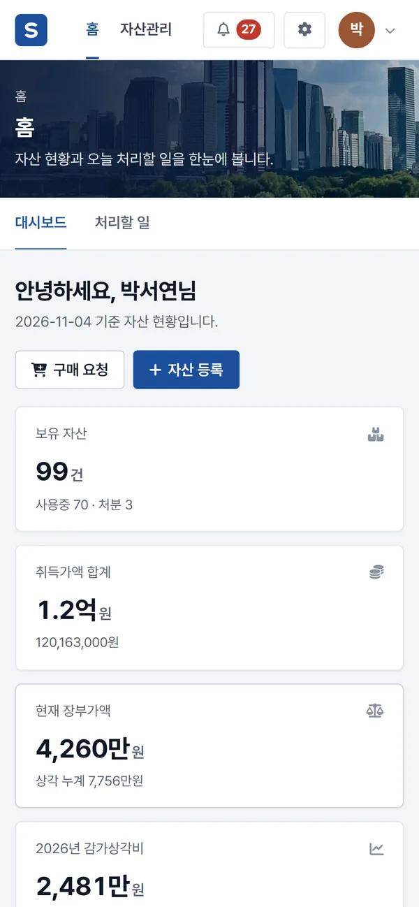
자산을 다루는 담당자 계정마다 권한을 나눠 맡깁니다. 현황과 보고서는 엑셀로 내려받습니다.
보기만 하고 바꾸지 않습니다
매일의 자산 업무를 처리합니다
승인과 마감을 맡습니다
조회 전용 계정은 아무것도 바꿀 수 없고, 승인 · 마감 · 계정 관리는 마스터 관리자만 합니다. 화면이 아니라 서버에서 막습니다.
비밀번호는 되돌릴 수 없는 방식(해시)으로 저장합니다. 로그인 실패가 반복되면 10분 동안 시도를 막고, 30분 동안 쓰지 않으면 저절로 로그아웃됩니다.
누가 언제 무엇을 바꿨는지 감사 로그로 남고, 자산마다 등록부터 지급 · 이동 · 처분까지의 이력이 쌓입니다.
웹 브라우저로 접속하므로 설치할 것이 없습니다. 지금 쓰는 대장을 옮기면 바로 시작합니다.
관리하는 자산 수와 지금의 대장 · 구매 방식을 들려주시면, 실제 화면으로 맞는지 함께 봅니다.
부서 · 위치 · 자산 분류를 정하고, 임직원은 엑셀 한 장으로 한 번에 등록합니다.
지금 쓰는 자산 대장과 라이선스 목록을 등록 양식에 맞춰 엑셀로 올립니다.
QR 라벨을 인쇄해 붙이면, 그다음부터 구매 · 입고 · 지급 · 실사가 한 흐름으로 이어집니다.
아니요. 자산 · 구매 · 재무 담당자가 쓰는 관리용 ERP입니다. 로그인 계정은 조회 전용 · 부관리자 · 마스터 관리자로 나뉘고, 임직원은 자산을 지급받는 사람으로 등록만 됩니다.
네. 등록 양식을 내려받아 지금의 자산 대장 · 라이선스 목록 · 임직원 명단을 채워 올리면 한 번에 들어갑니다.
정액법과 정률법으로 달마다 나눠 계산하고, 정률법은 법인세법 상각률을 따릅니다. 달을 마감하면 그 달의 금액이 확정되어 바뀌지 않습니다.
웹 브라우저로 접속하므로 설치할 것이 없습니다. 휴대폰 브라우저에서도 화면이 맞춰지고, 라벨의 QR을 찍으면 그 자산 화면이 열립니다.
관리하는 자산 수와 필요한 기능에 따라 달라집니다. 도입 문의로 알려 주시면 견적과 함께 안내드립니다.
완성된 서비트를 월 구독으로 바로 쓰시거나, 우리 회사에 맞게 기능을 더해 구축합니다.
바로 쓰기
사용 인원에 따른 월 구독
구독 센터에서 바로 신청하면, 영업일 1일 안에 우리 회사 전용 주소 · 관리자 계정과 설치 파일을 메일로 보내 드립니다. 설치하면 바탕화면에 아이콘이 생깁니다.
우리 회사에 맞게
견적 요청 → 상담 → 견적서 → 구축
서비트를 바탕으로 우리 회사 업무에 맞는 기능을 더하거나, 화면 · 양식을 바꾸거나, 쓰고 있는 다른 시스템과 연결합니다. 견적 요청 메일을 보내 주시면 상담 뒤 견적서를 드리고, CGEssence 가 직접 찾아가 구축합니다.
관리하는 자산 수와 지금의 대장 · 구매 방식을 알려 주시면, 시연 화면과 함께 도입 방법을 하루 안에 답변드립니다.